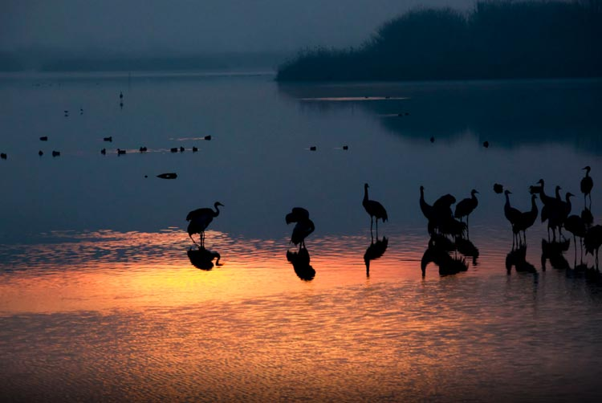
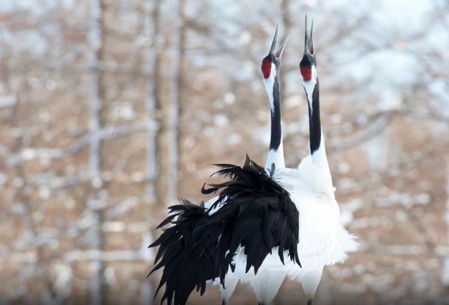
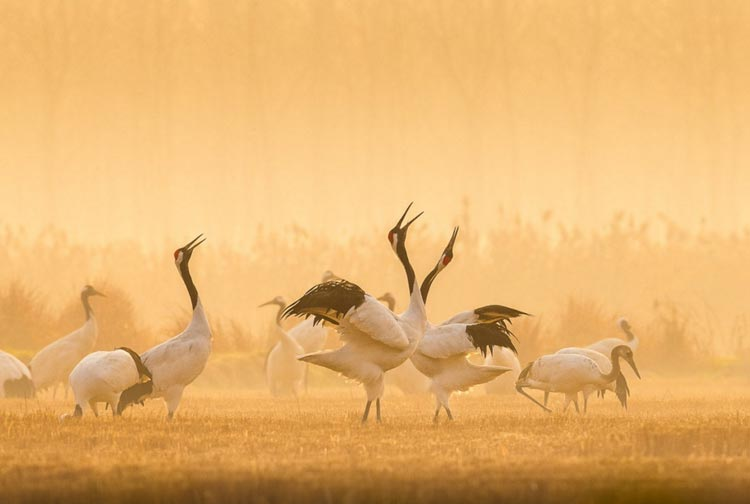

我是一只丹顶鹤，是陆生珍稀动物的一种。当人们想到我这个族群，脑海中往往会出现一群亭亭玉立的仙鹤在夕阳西下的黄昏中挺胸昂首、回步转颈，或引颈高鸣或展翅作舞，似在夕阳的伴奏下跳着欢快的芭蕾。但是现在，很多时候并不是这样，其实，我并不喜欢“珍稀动物”这个标签，因为你明白，这意味着我们这个族群面临着严峻的处境。
或许往昔之所以美好，是因为很多美好的东西消失在了行过的时间里，再也不会回来了。那种感觉，就像“小时候”。
那时候大自然真“自然”啊，天光云影山音水色都触手可及。那时候，开阔的平原、沼泽、湖泊、草地、海边滩涂、芦苇、沼泽以甚至是农田和耕地，都是我们的乐园。我们常常是“一家人”生活在一起，每个家庭都在各自的小范围内生活，饿了就吃些鱼虾，渴了就喝点水，有时候顺便还洗个澡。
我们都是天生的舞者。我们的舞蹈大多是几十个、几百个动作的连续变幻，舞蹈的主要动作有伸腰抬头、弯腰、跳跃、展翅行走、屈背、鞠躬等，但姿势、幅度、快慢都有不同。而这些动作又都有机的结合在一起，如弯腰——伸腰抬头——头急速上下摆动，衔物——跳跃抛物——不变位的体旋转，靠腿力或扇翅做跳跃，弯腰动作等。
这些动作都是目的和含义的，鞠躬表示友好和爱情；全身绷紧的低头敬礼则表示自身的存在、炫耀、恐吓之意；弯腰和展翅表示我们心情很好，怡然自得、闲适消遣；亮翅表示欢快的心情……
我是吉祥的代名词。东亚地区的居民，用丹顶鹤象征幸福、吉祥、长寿和忠贞。在中国历史上丹顶鹤被公认为一等的文禽，明朝和清朝给丹顶鹤赋予了忠贞清正、品德高尚的文化内涵。一品文官的官服上有我们窈窕的身姿，我们还被列为仅次于皇家专用的龙凤的重要标识，被人们称为“一品鸟”。这都是传说，但是现在我们真的快要变成“传说”了……
人类人口的不断增长，使我们的栖息地不断变为农田或城市。吉林省西部的月亮泡就曾是丹顶鹤的繁殖地，但是那里的人围湖筑堤，将我们的栖息地垦为农田，那里的伙伴已经绝迹。另外人类对我们的狩猎也不断增多，拣卵、偷猎等措施使我们的数量急剧减少。甚至在全球范围内我们都面临着严峻的处境。
除丹顶鹤外，还有很多的动物被列入了珍稀动物，包括陆生、水生的许多种类。自然环境变化加上人类的捕猎，我们真的快要成为传说了……
1、每年的4月8日是国际珍稀动物保护日，设立这个节日是为了缓解各个国家出现的不同程度珍稀动物灭绝的问题；
2、善待自然、善待每一个物种，这样也是在善待人类自己。